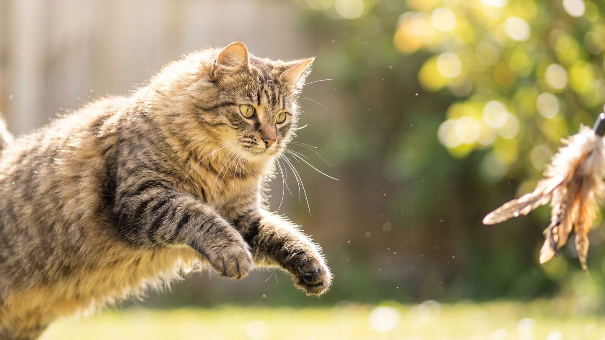

Гладишь котон-де-тулеара — и рука тонет в шерсти, мягкой как вата, а на диване ни волоска. Породу так и назвали: coton по-французски «хлопок». Но та же шерсть за три дня без расчёски сваливается в колтуны, которые уже не разобрать. Ниже — как устроен этот компаньон с Мадагаскара, во что на самом деле обходится его «облако» и кому он подойдёт.
🐾 У вас котон-де-тулеар?
AnimaLife соберёт уход под породу: к каким болезням есть склонность, что проверять по возрасту, чем кормить и когда пора к врачу. Бесплатно, прямо в мессенджере.
Собрать план ухода → Собрать в MAX →
У вас iPhone? AnimaLife есть в App Store
Котон-де-тулеар родом с Мадагаскара, из портового города Тулеар. По легенде эти маленькие белые собаки были привилегией знати — простолюдинам держать их запрещалось. Никакой рабочей задачи у породы нет и не было: её веками отбирали на одно — быть приятным спутником человека. Это чистокровный компаньон, и характер у него ровно под эту роль.
Котон привязывается к семье намертво и предпочитает быть там же, где вы, — на кухне, в ванной, под столом. Это «липучка» в лучшем смысле: весёлый, чуткий к настроению, легко ладит с детьми и другими животными.
Хлопковая шерсть без жёсткого подшёрстка почти не линяет — поэтому котона часто выбирают люди, уставшие от шерсти на одежде. Но «не линяет» означает, что отмерший волос не выпадает, а остаётся в шубе и без расчёсывания скатывается в колтуны у кожи.
Порода в целом крепкая и живёт долго — 14–16 лет не редкость. Как у многих мелких собак, стоит держать в поле зрения суставы, глаза и зубы; конкретные риски и график осмотров обсудите со своим ветеринаром. Мелкие челюсти склонны к зубному налёту, поэтому чистка зубов и контроль у врача — не блажь, а часть ухода.
Энергии котону хватает на пару прогулок и активные домашние игры — это не спортсмен, но и не диванная подушка: без движения и общения он начинает скучать и шалить. Планового осмотра раз в год и внимания к весу, аппетиту и шерсти обычно достаточно, чтобы вовремя заметить перемены и не пропустить начало проблемы.
🐾 Ваш питомец — котон-де-тулеар?
Заведите профиль в AnimaLife: приложение запомнит породу, возраст и вес и будет подсказывать по уходу именно для неё. Вопросы AI-ветеринару — круглосуточно и бесплатно.
Завести профиль → Завести в MAX →
У вас iPhone? AnimaLife есть в App Store
🐾 Понравился разбор?
Подпишитесь на канал — каждый день разбираем по одному тревожному симптому у кошек и собак: что в пределах нормы, а когда пора к врачу. Подпишитесь, чтобы не пропустить разбор, который может спасти здоровье вашего питомца.
Материал носит информационный характер и не заменяет очную консультацию ветеринара.